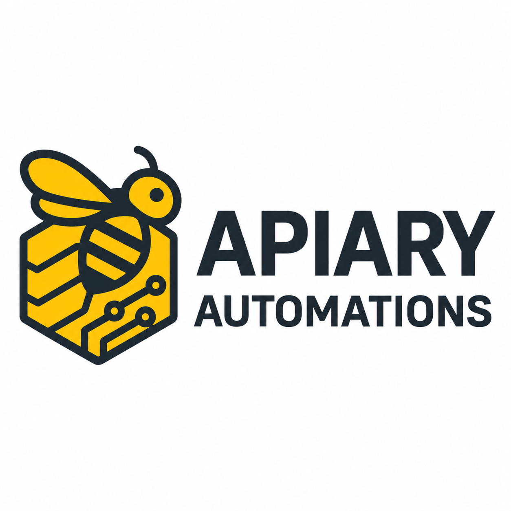

Lead capture + instant notifications
Record new inquiries and notify the right person when a lead arrives.
Apiary Automations by Samuel Webster
I help local businesses respond to leads faster, reduce repetitive admin, automate customer follow-up, and streamline intake and handoff processes using Make.com.
I build practical workflows that connect the tools you already use, so you spend less time doing the same work manually.

What I Automate
These are examples, rather than a restricted list of services. I start with the steps your business repeats and the tools you already use.
Record new inquiries and notify the right person when a lead arrives.
Keep follow-up moving with messages based on your agreed process.
Connect booking details with the information you need before an appointment.
Move submitted details into your customer records without repeated copying.
Organize requests so you can review the details and decide what happens next.
Connect welcome messages, intake details, and the tasks needed to get started.
Create a task for the right person when a new inquiry or request arrives.
Send files to the appropriate folder or person using clear routing rules.
Send a review invitation after a completed service, following your customer communication preferences.
Reduce repetitive reminder messages with a workflow tied to your bookings.
Bring routine updates together so you can see where requests stand.
How It Works
A website inquiry can start a sequence of small actions, without someone repeating each step by hand.
I customize the steps around your business, including the tools you use, who needs to be notified, and when a person should take over.
Problems I Can Help Reduce
Automation is useful when your business repeatedly performs predictable administrative steps.
Example Automation
An illustrative workflow that I can adapt to your process.
This can help your business respond faster and reduce the chance that inquiries are forgotten or lost.
Why Work With Me
I use Make.com to build workflows around how your business actually operates. You communicate directly with me, the person building the automation.
I design around your existing tools and explain what will be automated and where you remain in control.
I focus on one useful workflow at a time, so you can improve a repetitive task without replacing everything.
I aim for clear steps, direct communication, and no unnecessary complexity.
Free Automation Review
I'll take a look at your current process and identify where a simple automation could save time, improve follow-up, or reduce manual work. There's no obligation.
Contact
Share the process you'd like to improve and the tools you currently use. I'll use those details to start your free automation review.